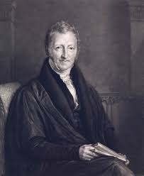
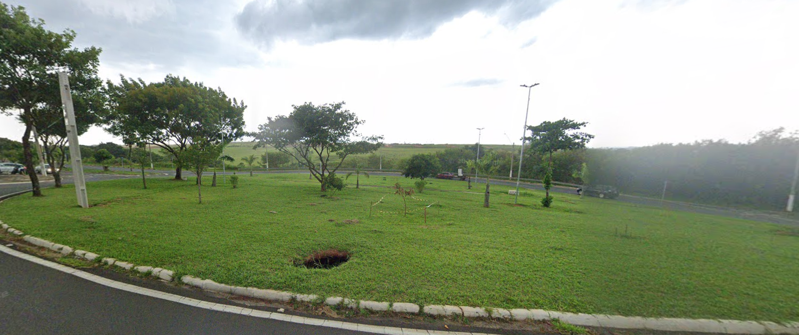

\
Portfólio do Malthus
Portfólio do Malthus
Ola meu nome é Malthus o motivo do Portfólio é para fins educacionais e profissioonais estarei colocando minhas informações aqui.Tenho 17 anos, moro em Paulinia à muito tempo, e meu sonho é criar minha prrópria empresa de tecnologia. estou no ultimo ano do ensino médio.
Sobre mim

Eu gosto de café, jogos, tecnologia, história, robotica e inovação. Sobre a minha pessoa não tem0 muito o que dizer, sou reservado, introvertido, e meu objetivo é criar algo histórico e fazer meu nome pelo mundo, minha mente nunca para e estou sempre refletindo sobre algo, minha maior vontade é fazer algo de muita relevância antes de partir dessa vida, possuo uma facilidade para absorver qualquer conteúdo,gosto do silêncio e da natureza, sempre buscando algo para fazer, meu jogo favorito é Sonic.
Habilidades
sou empatico, inteligente, criativo, sempre tentando melhorar e buscando inovar, determinado, calmo e sempre analítico, estratégico e sempre consigo tirar uma solução do nada, bom conselheiro e lider, capaz de muita coisa.
Projetos escolares
criei uma história em inglês e depois ajudei no jogo, além de ter feito musicas também, participei do jornal da escola, fiz um projeto de biologia, além de participar das olimpíadas de história, a história criada era chamada de Crazycave aonde contava a história de um mundo onde monstros são dominantes.
Participação de atividades extracurriculares
já participei de um time de futebol há muito tempo, empreemdorismo, educação financeira e robotica.
Projetos comunitários
plantei arvores.

Habilidades técnicas
Resolução de Problemas, Pensamento crítico, Adaptabilidade, Liderança, Criatividade, Habilidades tecnológicas, Empatia e inteligência emocional, eu tenho mais afinidade com coisas tecnologicas.
Trabalhos pessoais
nenhuma até agora no ramo profissional.